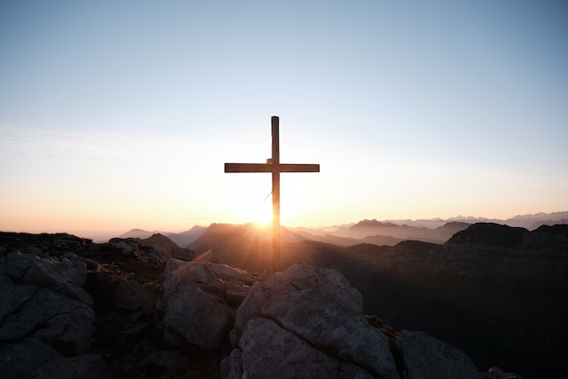

религиозная группа христиан веры евангельской
(пятидесятников) «Дом Божий в г.Дмитров».
ЦЕРКОВЬ, где
возвращается
вера в будущее
Служим тем, кому тяжело
Придите ко Мне все труждающиеся
и обремененные, и Я успокою вас.
От Матфея 11:28
и обремененные, и Я успокою вас.
От Матфея 11:28
«Дом Божий» в городе Дмитров — это дом, где уставший и отчаявшийся человек может укрыться от суеты мира и проблем. Здесь лечат душевные раны. Здесь справляются с обидами и зависимостями. Здесь принимают любовь и встречают новую судьбу.
Служения церкви
Порядок проведения служений регулируется
федеральным законом «О свободе совести и религиозных
объединениях» от 26.09.1997 №125-ФЗ. В соответствии
с данным законом, служения церкви происходят на основании
внутренних установлений. Наши установления — 66
канонических книг Библии (ветхий и новый завет) в синодальном
переводе.
Служение восстановления
Спасай взятых на смерть, и неужели откажешься от обреченных на убиение?
Притчи 24:11
Притчи 24:11
Отчаяние, алкоголь, наркотики. Они не только портят жизнь, они разрушают самое основание. Служение восстановления призвано это основание вернуть.
данное служение предполагает предоставление верующим возможности
удаления от городской суеты для отдачи себя усердной молитве,
изучению Священного Писания, общественному труду,
совместному радению с подвизающимися на данном поприще.
В соответствии со Стратегией государственной антинаркотической
политики Российской Федерации на период до 2030 года,
формирование духовно-нравственных ценностей,
направленных на осознанный отказ от маргинального
образа жизни и формирование негативного отношения
к алкоголю и наркотикам, является неотъемлемой
частью комплекса мер, направленных на профилактику
и борьбу с наркоманией и алкоголизмом.
Молитвенное служение
Всякою молитвою и прошением молитесь во всякое время духом,
и старайтесь о сем самом со всяким постоянством и молением о всех святых
Ефесянам 6:18
Ефесянам 6:18
Как всякая церковь, мы молимся за наших
участников. Мы свято верим, что усиленная молитва
способна на многое.
Группа прославления
Библейское служение
Наша вера

Я верю в Бога Отца,
всемогущего творца неба и земли. Верую так же в Иисуса
Христа, Единородгого Сына и Господа нашего, который был
зачат Духом Святым, рожден Девой Марией, страдал во
времена Понтия Пиллата, был распят и погребен,
сошел в церство смерти, на третий день воскрес из мертвых,
вознесся на небо, воссел по правую руку Всемогущего.
Я верю в Святого Духа, в святую истинную Церковь,
в общение святых, в прощение грехов, в воскресенье из мертвых
и в жизнь вечную.
апостольский символ веры
- Наша вера — христианство
- Наше Священное Писание — Библия. Канонические книги (ветхий и новый завет). Синодальный перевод. Та самая библия, которую можно найти в любой лавке или магазине.
- Мы принимаем современную медицину и науку в-целом. Врачи — это люди, получившие от Бога особый дар, а познание — дело богоугодное и праведное.
- При этом мы осуждаем распутство, потребительство и прочие греховные проявления, присущие нашему времени.
- Мы придерживаемся традиционных семейных ценностей
- Как учил Мартин Лютер, мы верим искренне и в простоте. Так же как мы верит ещё 800 миллионов человек по всему миру.
ОБРАТИТЬСЯ
Если вы попали
в сложную жизненную ситуацию, испытываете проблемы
с зависимостью или иную душевную боль, вы можете
обратиться к нашим волонтерам.
МЫТИЩИ
+7 985 218-26-82
+7 985 218-26-82
МОСКВА и МО
+7 916 656-34-52
+7 916 656-34-52
ОРЕХОВО-ЗУЕВО
+7 926 739-93-91
+7 926 739-93-91
САНКТ-ПЕТЕРБУРГ
+7 925 445-24-01
+7 925 445-24-01